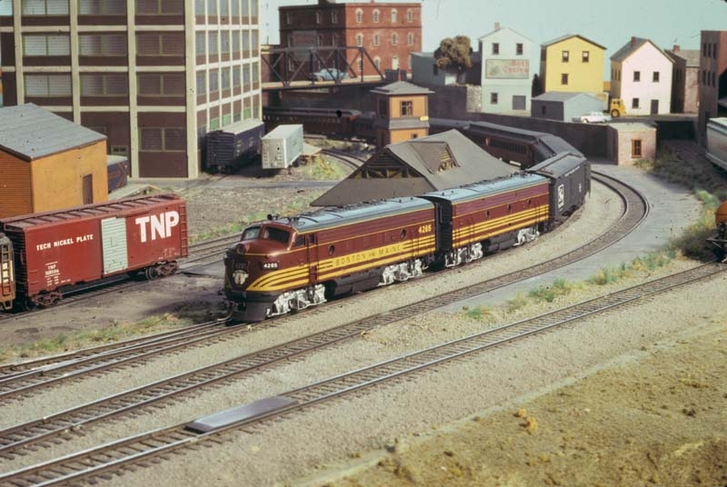
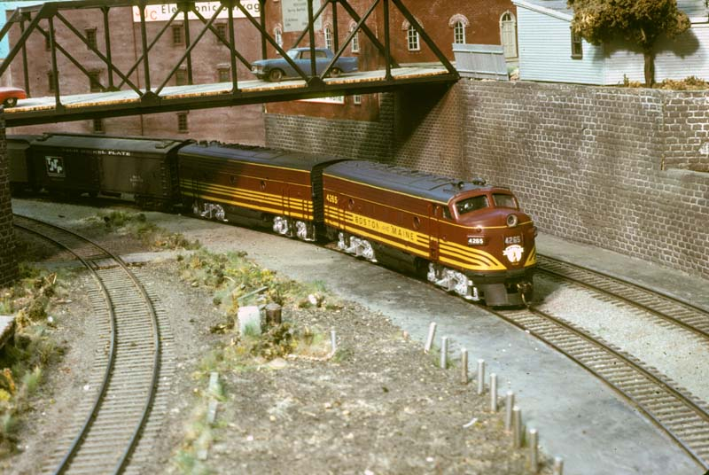
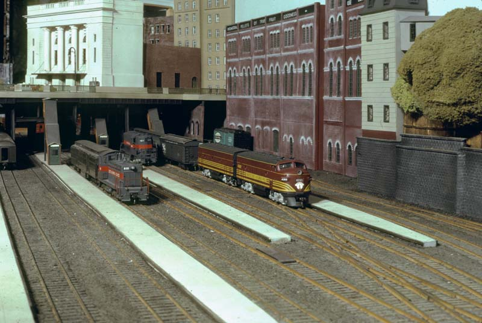
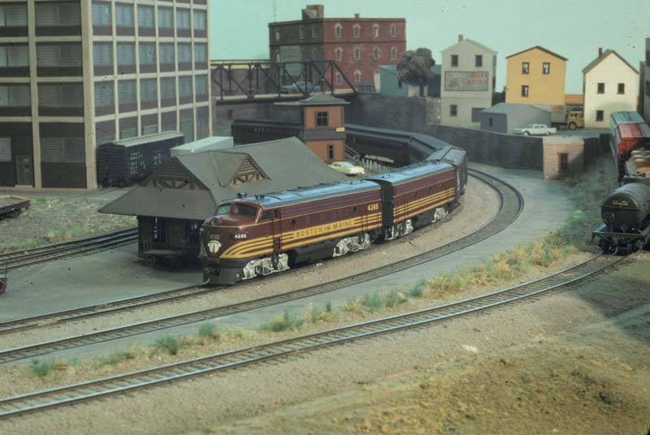
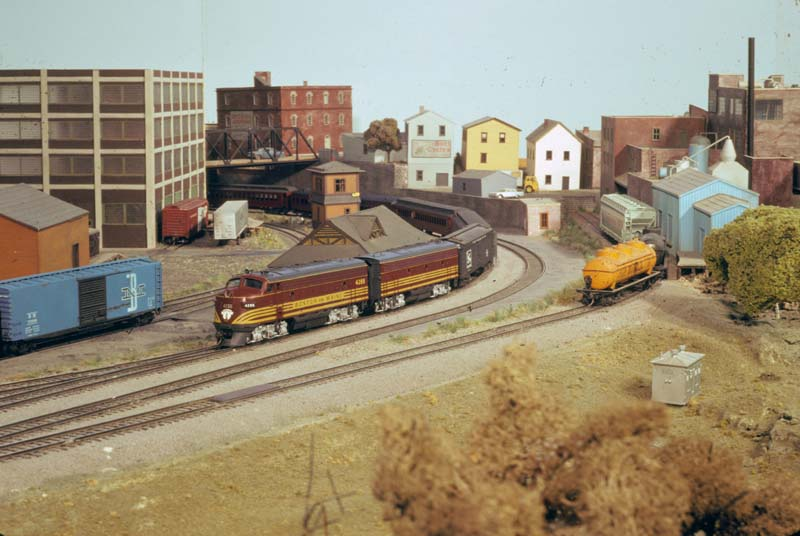

|
|
This page was converted from an article written about the club which was published as the cover article in the July 1986 issue of Railroad Model Craftsman magazine. It's just a straight linear exposition. It has not been checked to see if any of the facts herein have changed since the time it was written more than a decade ago. I expect each of these sections, reworked for Web suitability and verified for currentness, would make a good page of its own.
TMRC is not a typical model railroad club for many reasons. Being primarily an MIT student organization is probably the biggest influence. We need to allow incoming students to operate their own equipment on the club's track; this limits the choices for control systems. Also, we frequently get donations of electronic equipment that would be expensive for other clubs to obtain. This, combined with the overall technical sophistication of the average member, leads to quite sophisticated control systems. The main purpose of the control system, however, is to provide prototypical operation.
The track plan allows for a variety of operating patterns. It is designed to be operated point-to-point for card-order freight and timetable passenger operation. Several cutoffs provide for other schemes including continuous loop for public open houses or casual operation and point-to-loop for timetable operations with a small number of operators.
While the TNP does not model any specific prototype, it represents part of a Class I railroad connecting a coastal city with the first inland division point. As the mainline proceeds from the large coastal city (Gifford City) to the division point (Tuckerton), it passes through several towns, a small city, and a mountain area. The scenery along the way represents the Northeast, and has been modeled to create scenes appropriate to a wide range of eras, from late steam to modern.
Gifford City is a terminus containing extensive freight and passenger yards with a large roundhouse and engine servicing facility. This yard can be run as either a terminal yard or a through loop yard. The small city (Sawyer Junction) contains an industrial area with many sidings. The mountain area includes a sawmill and a long steel viaduct.
All track and switches are hand-laid with a mixture of codes 100 and 83 for the mainline and codes 70 and 55 for sidings and spurs. Switches are all custom built in place. The benchwork utilizes heavy duty construction capable of supporting the full weight of a person in most areas. Most major construction projects are first built out of position and then installed quickly to limit the amount of time during which the layout is not operational.
The scenery is nearly complete on over two thirds of the layout. The ground is plaster or wood putty over screen wire or styrofoam. Trees are made by many different techniques. There are over a hundred structures on the layout, mostly scratchbuilt or extensively kitbashed. There are many bridges and tunnels around the layout which have all been scratch-built.
The mainline system manages power routing from five cab positions to fifty mainline blocks, and allows independent operation of all trains. Cab signals are provided for each operator. This system is easy for new members and guests to learn to operate, and operation is simple enough that one person can readily operate more than one train at a time. The mainline system is more typically used for operating sessions with several yard operators, five mainline operators each controlling a single train, and a dispatcher controlling turnouts.
Each yard has an independent control system allowing the yard operator complete control over speed, direction, and turnout position. In addition, the yard control systems allow trackage within the yard to be set up for operation under control of the mainline system. At least two mainline and two yard locomotives can be operated simultaneously within each yard.
The Gifford City freight and engine yards operate under computer control and a similar system is under construction for the Gifford City passenger yard. The freight and engine yards have two lighted pushbutton panels, which allow the operator to push buttons identifying the two ends of the desired route, and the computer finds the best available route, and sets up the power and switches. The buttons then light to indicate the route. Routes controlled by the other panel (or the mainline) blink in specific patterns. The computer used is a Digital Equipment Corporation PDP-11/05 minicomputer, which was donated by the manufacturer in 1973.
The passenger service provided by MITCo operates in the streets of Gifford City, with an interurban run to the nearby town of East Whitney. Freight service is provided over the interurban line by BITCo, which also has extensive street trackage in East Whitney serving the local industries. The interchange with TNP is through a small yard where the freights are sorted to simplify switching in East Whitney.
The trolley line can operate three trains independently with overhead or two rail operation. There are thirty feet of street trackage serving Gifford City and another thirty feet of interurban trackage serving the East Whitney industrial area.
A unique feature of the trolley is the overhead wire, which is number 31 copper-plated steel wire, rather than the more commonly used phosphor bronze. The smaller diameter of the wire looks better, and the steel inner core gives it enough strength to prevent stretching and sagging. For ease of construction the overhead is not gapped. Control is done by switching the leads to the rails.
The club is primarily for students, faculty, and employees with some club alumni maintaining continuing membership. Regular open houses which are free to the public are held in the Spring and Fall. The next is scheduled for April 19, 1986. Visitors are welcome most any time the club is open, but it is advisable to call beforehand at (617)-253-3269. Although the club activities are not scheduled it is most likely to find activity on Friday evening and Saturday from mid-afternoon through evening.
The following pictures are some of the photos from the article, along with the original captions.
Cover: The 1986 NMRA National Convention will be held in Boston this year and among the layouts featured will be that of the Massachusetts Institute of Technology. A pair of B&M F-units are shown working a passenger train at Sawyer Junction on the New England based HO layout. Photo by James VanBokkelen. [Note: the cover actually featured a cropped version of this photo.]

The B&M pool train recalls the time when gold and maroon was in the Northeast; James VanBokkelen did the models. The towns are a mix of kit and scratch structures. Photo by Andy Miller and Scott Miller

Tuckerton features a traditional large-city passenger station, and even a quiet time at the station has some action-here a through train trades B&M Fs for TNP GPs while a switcher rearranges head-end cars on an adjacent track. James VanBokkelen photo

The following are alternate versions of the cover image, and did not actually appear in the magazine.


|
Tech Model Railroad Club of
MIT Room N52-118 265 Massachusetts Avenue Cambridge, MA 02139
|
+1 617 253-3269 Email: tmrc-web@mit.edu |